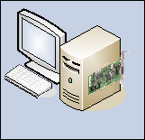

Stand-Alone System without a Local Web Server (IIS)
The following describes a stand-alone configuration, where the Desigo CC server and the Desigo CC Installed client are located on a single computer.
In this scenario, Windows App clients are not involved.
What is a Stand-Alone System?
A single dedicated workstation that runs both the Desigo CC server and the Desigo CC client application, typically communicating with a field system in a networked environment. It includes the following features:
- Own administration
- Microsoft SQL installed locally
- IPv4
- No IT firewalls in-between Desigo CC components (since there are no remote clients, firewalls do not need to be opened for communication)
Security
- Simple setup (certificate configuration not required).
- Effort for security configuration is low.
- A stand-alone system is secure in regards to attacks from the outside. However, installation guidelines for closing outside communication by firewall settings, virus scanner, and backup must be followed to secure the system.
Deployment Diagram

Desigo CC Server with Installed Client and Microsoft SQL Server